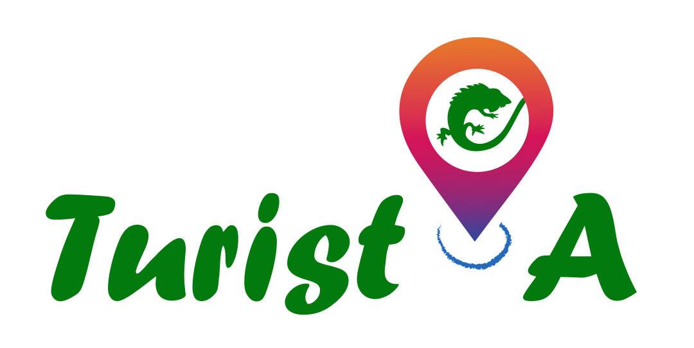

<nav class="navbar navbar-expand-lg navbar-dark bg-dark mb-3">
  <a class="navbar-brand" rel="home" routerLink="/"
    >
  </a>
  <button
    class="navbar-toggler"
    type="button"
    data-toggle="collapse"
    data-target="#navbarNav"
    aria-controls="navbarNav"
    aria-expanded="false"
    aria-label="Toggle navigation"
  >
    <span class="navbar-toggler-icon"></span>
  </button>
  <div class="collapse navbar-collapse" id="navbarNav">
    <ul class="navbar-nav mr-auto">
      <li class="nav-item">
        <a class="nav-link" routerLink="/">
          <i class="fas fa-home"></i> Inicio
        </a>
      </li>
      <li class="nav-item" *ngIf="isAdmin">
        <a class="nav-link" routerLink="/lista"
          ><i class="far fa-list-alt"></i> Lista</a
        >
      </li>
      <li class="nav-item" *ngIf="isAdmin">
        <a class="nav-link" routerLink="/new"
          ><i class="fas fa-plus-circle"></i> Nueva ruta</a
        >
      </li>
    </ul>
    <form class="form-inline my-2 my-lg-0">
      <button
        class="btn btn-outline-success my-2 my-sm-0"
        routerLink="/login"
        *ngIf="!isLogged"
      >
        <i class="fas fa-sing-in-alt"></i> Iniciar Sesión
      </button>
      <button
        class="btn btn-outline-danger my-2 my-sm-0"
        *ngIf="isLogged"
        (click)="logOut()"
      >
        <i class="fas fa-sing-out"></i> Cerrar Sesión
      </button>
    </form>
  </div>
</nav>
